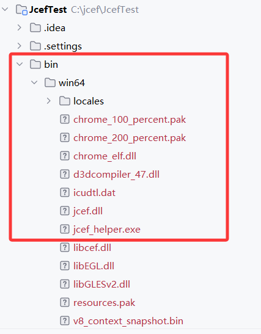
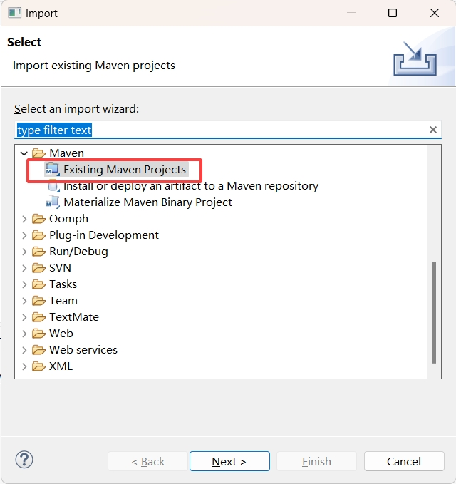
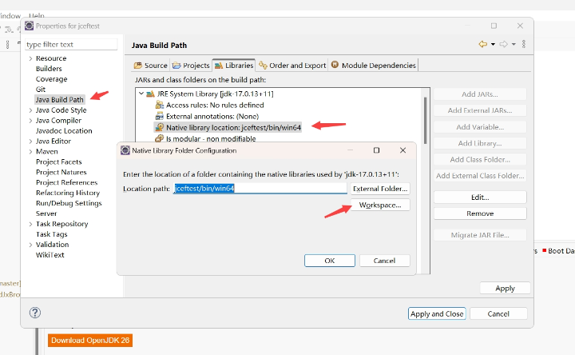
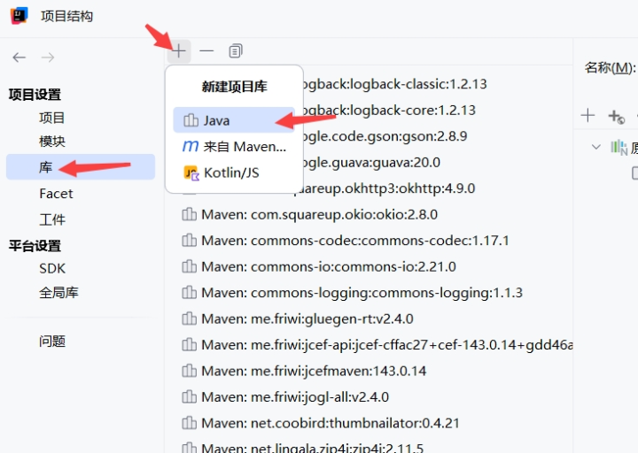
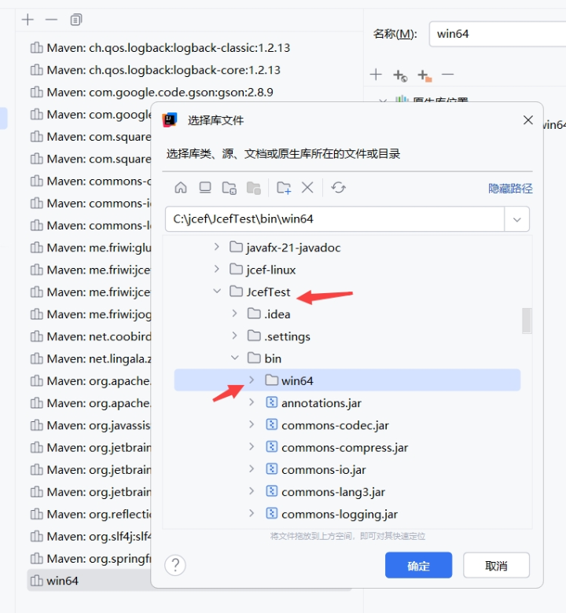
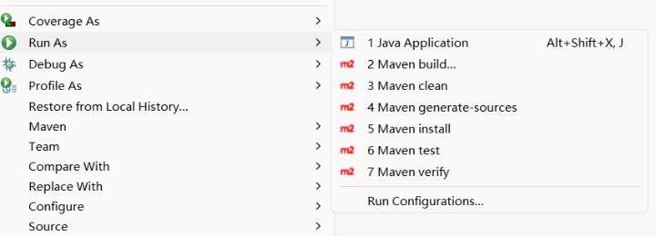
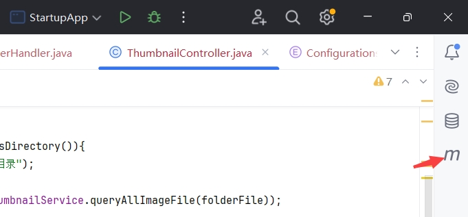
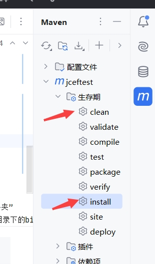
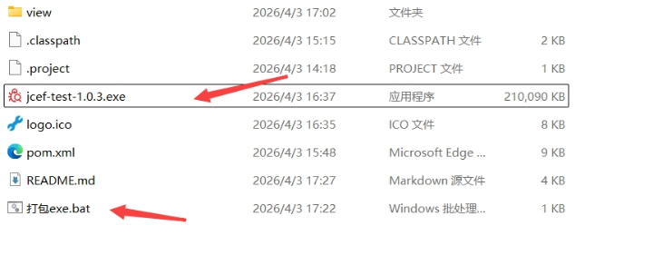
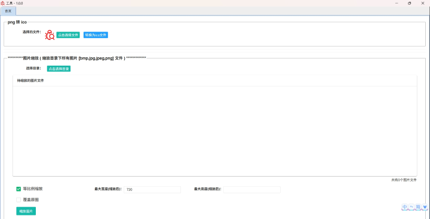

README
JcefTest
使用的jcef版本：146.0.10
本工程包含 JAVA与JS交互，鼠标右键菜单，以Tab形式展示浏览器、png转ico、图片缩放。在jdk14以上版本，可以使用 打包exe.bat/CreateWindowsInstallPkg类 生成exe安装包个人修正的JCEF的API文档(中英文双语):
百度云盘：https://pan.baidu.com/s/18eioiDbIPM5aDdyn0TatVA 提取码: aptd 。
微云： https://share.weiyun.com/AFOf0Tsb如果您有修正此文档的需求，可以移步我的文档翻译项目(也是使用jcef开发)： https://github.com/lieyanfeimao/xym-translate-jcef1 (github)或者 https://gitee.com/edadmin/xym-translate-jcef1.git (码云)
关于jcef的一些教程，可以参考我的csdn： https://blog.csdn.net/xymmwap/category_9374584.html
关于本项目存在的问题不要发在这里，我一年难得看一次。其他的问题我一般也解决不了，请去Jcef的论坛求助： https://magpcss.org/ceforum/viewforum.php?f=17 。老外通常还是挺热心的
联系我请用下面的方式
email：842417019@qq.com
qq：842417019
项目更新
0.0.3
添加用于windows打包exe的类：CreateWindowsInstallPkg
增加 jcef api 中文离线文档
增加jcef官方的demo（位于src/test）
0.0.2
添加 png转ico、图片缩放 功能
0.0.1
创建工程
软件包和类说明
com.xuanyimao.jceftest ：包含JAVA与JS交互，鼠标右键菜单，以Tab形式展示浏览器的demo
JcefMavenTestFrame ：使用JcefMaven下载和加载JCEF二进制库，运行此类不需要手动添加JCEF二进制库到项目库
JcefMavenTest2Frame ：使用JcefMaven加载JCEF二进制库，省略下载安装步骤，运行此类不需要手动添加JCEF二进制库到项目库
TestFrame ：一个简单的demo,运行此类需要手动将JCEF二进制库添加到项目库
JsTestFrame ：js调用java代码的demo,运行此类需要手动将JCEF二进制库添加到项目库
MouseMenuTestFrame ：创建鼠标右键菜单的demo,运行此类需要手动将JCEF二进制库添加到项目库
TabbedPaneTestFrame ：以tab栏形式创建浏览器的demo,运行此类需要手动将JCEF二进制库添加到项目库
com.xuanyimao.app ：这是一个demo，用于测试将项目打包为exe(包含 png转ico 和 图片缩放 两个功能)
StartupApp: 用于启动一个由jcef+layui做的包含 png转ico 和 图片缩放 功能的软件,运行此类不需要手动添加JCEF二进制库到项目库
CreateWindowsInstallPkg：用于创建exe安装包，需要先执行maven clean install 再运行。需要高版本jdk(建议使用openjdk17及以上版本)，如果提示需要wix，可去此处下载 https://github.com/wixtoolset/wix3/releases
net.coobird.thumbnailator.util ：图片缩放用到的thumbnailator库有bug，做了修改，与jcef无关
环境(库)说明
jdk版本为1.8以上。不过为了能使用jdk自带的jpackage打包为各平台安装包（exe，deb等）的功能，建议使用jdk14以上的版本
maven建议用最新版本(3.8.5以上)
使用了jcefmaven库( https://github.com/jcefmaven/jcefmaven )，这里面包含了所需的jar。使用官方提供的代码启动时，会自动下载二进制库并解压，然后载入二进制库，使用方式可参考JcefMavenTestFrame和JcefMavenTest2Frame。
使用了jcefbuild库( https://github.com/jcefmaven/jcefbuild/releases )，这里有官方构建好的二进制文件。需注意，如果需要播放视频，建议自己去编译JCEF，据说因为版权的原因，官方的不支持播放某些格式的视频。
工程导入
因为git无法上传大文件，所以jcef的二进制文件打成了压缩包，位于bin\win64下，先到此目录解压二进制文件
解压后，jcef.dll的路径应当为 bin\win64\jcef.dll

eclipse
注意：如果你要使用高版本的jdk，建议使用最新版本的eclipse  
1、以maven工程方式导入本项目
idea
请注意，在修改了pom.xml后点击 “同步所有Maven项目”，有可能会导致jcef二进制库引用失效，此时需要把下面的步骤重新做一次
1、导入工程  
2、点击 项目结构 > 库 > 新建项目库 > Java 。选择项目下的 bin\win64，点击确定
打包jar 和 exe
执行打包脚本的过程中如果提示需要wix，可去此处下载 https://github.com/wixtoolset/wix3/releases
maven clean install
1、运行maven的clean和install(牛逼点就敲mvn命令)，eclipse在右键菜单，idea通常在右上角，依次点一下就行。如果报错，大概率是maven本地仓库的jar包没下载好，可以去maven仓库确认一下
eclipse
在项目上右键 
idea
 
使用java代码打包exe
2、进入 com.xuanyimao.app.CreateWindowsInstallPkg ，修改版本号然后运行，运行成功后在项目根目录生成 jcef-test-版本号.exe
您也可以用下述的bat脚本打包，CreateWindowsInstallPkg类也是执行了shell指令打包，只是在打包后对bin目录下的jar文件进行了清理
使用bat脚本打包exe
3、jar包将生成在bin目录中，双击运行项目根目录的 打包exe.bat 文件，将会在项目根目录生成一个exe文件，双击此exe运行安装程序
注意：如果你的高版本jdk没配置在环境变量中，请修改 打包exe.bat 中的 jpackage 为你高版本jdk中的绝对路径。
比如我环境变量配置的是jdk1.8，我开发使用的是jdk17，我的jdk17安装在C:\git\jdk-17.0.13+11
那么我打包的指令是：
C:\git\jdk-17.0.13+11\bin\jpackage -i bin -n jcef-test --install-dir "jcef-test" --icon logo.ico --app-version 1.0.0 --win-shortcut --win-menu --win-dir-chooser --main-jar jcef-test.jar
参数描述
-i：jpackage会将此目录下的所有文件打入安装包，示例中使用的是 bin 目录，安装后的路径为 安装目录\app\bin目录下的所有文件。我们可以将二进制文件和jar包都放到统一的目录中
-n：软件包名
--install-dir：安装目录名
--icon：软件安装后的图标。windows下需使用ico文件
--java-options：添加一个java启动参数，可以使用多个。示例中我们配置了java.library.path指向jcef的二进制文件目录
--app-version：版本号。每次打包新版本需要变动，否则可能会无法安装。如果不变动版本，你需要卸载原来的版本。
--main-jar：包含入口类的jar文件。这个文件要放在 -i 指定的目录中。
安装后，可以到安装目录下查看文件结构。在app目录下，有个以cfg后缀结尾的配置文件，这个文件里面保存着jar包的启动参数，用记事本打开，你可以看到，--java-options配置项出现在了这个文件中
注意事项
每次打包时，请修改版本号(--app-version)，否则会无法安装。如果不想修改版本号，请先手动卸载已安装的版本再进行安装 
3、windows的图标请用ico图标，运行 com.xuanyimao.app.StartupApp，项目提供了将图片转换为ico图标的程序 